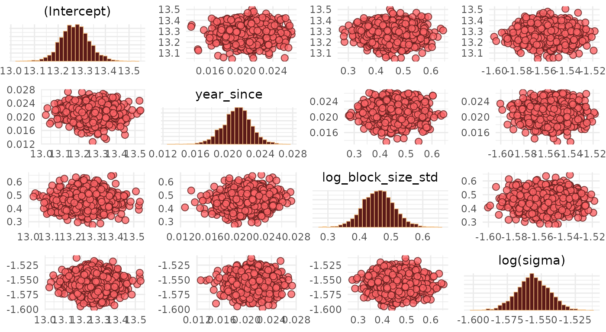
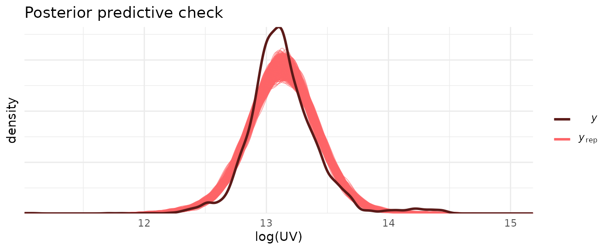

UV_model.RmdThe goal of this case study is to show how to use allhomes to pull in past sales data for various ACT suburbs and then fit a mixed-effect model using Stan to predict the unimproved value (UV, i.e. the value of the plot of land itself) as a function of the block size (in square-meters), the year of the sale and the suburb. We then explore the output of the model and interpret its results.
Taking inspiration from examples & modelling discussions given in Gelman, Hill and Vehtari, Regression and Other Stories, this case study also serves as an example of how to fit a mixed-effect model to real-world data and interpret results; as will become clear, the model fit is not particularly good in the sense that a lot of the observed variability remains unexplained by the model’s input variables. However, the case study is useful in the context of exploring model results and different aspects of the model fit, and represents the kind of analysis one might perform when exploring a new real-world dataset.
We get past sales for all suburbs in ACT’s Woden Valley from the last 10 years. This is easily done by using the allhomes::divisions_ACT dataset, and then filter divisions (i.e. suburbs) based on their corresponding SA3 regions.
Since we want to build a predictive model that allows us to estimate the residential unimproved value (UV) of a property based on its block size and location, we keep only those records where we have data for the UV and block size (i.e. we omit records where any of these fields are NA) and further limit block sizes to less than 2000 sqm and UVs to less than 2 million dollars (this is to exclude large commercial purchases).
data_model <- data %>%
select(division, unimproved_value, block_size, year) %>%
filter(
if_all(everything(), ~ !is.na(.x) & .x > 0),
block_size < 2000, unimproved_value < 2e6) %>%
# Variable transformations
mutate(
# Year since 2019
year_since = year - 2019L,
# log-transformed UV
log_UV = log(unimproved_value),
# log-transformed block_size, standardised to the log of median value
log_block_size_std = log(block_size) - log(850))
data_model
#> # A tibble: 3,473 × 7
#> division unimproved_value block_size year year_since log_UV log_block_size…¹
#> <chr> <dbl> <dbl> <int> <int> <dbl> <dbl>
#> 1 Chifley 444000 1048 2011 -8 13.0 0.209
#> 2 Chifley 451000 760 2011 -8 13.0 -0.112
#> 3 Chifley 366000 1020 2011 -8 12.8 0.182
#> 4 Chifley 486000 990 2011 -8 13.1 0.152
#> 5 Chifley 451000 719 2011 -8 13.0 -0.167
#> 6 Chifley 451000 743 2011 -8 13.0 -0.135
#> 7 Chifley 450000 1330 2011 -8 13.0 0.448
#> 8 Chifley 343000 889 2011 -8 12.7 0.0449
#> 9 Chifley 382000 796 2011 -8 12.9 -0.0656
#> 10 Chifley 359000 695 2011 -8 12.8 -0.201
#> # … with 3,463 more rows, and abbreviated variable name ¹log_block_size_stdWe now use rstanarm to fit a model using full Bayesian inference in Stan. We assume that the effects that the log-transformed block size and the (shifted) year have on the log-tranformed UV vary by division (i.e. suburb). To model this, we consider a fixed and a random effect component to both the overall intercept and predictor coefficient estimates: The fixed effects characterise the effects that are common across divisions, and the random effects are expressed as deviations from the fixed effects that vary across divisions.
Written out, the model takes the following form
\[ \begin{align} \mathtt{log\_UV} &\sim N\left(\mu, \sigma\right)\\ \mu &= \mu_\alpha + \alpha_{[i]} + \left(\mu_{\beta_1} + \beta_{1, [i]} \right) \mathtt{year\_since} + \left(\mu_{\beta_2} + \beta_{2,[i]}\right) \mathtt{log\_block\_size\_std}\\ \end{align} \]
where \[ \begin{align} \mathtt{year\_since} &= \mathtt{year} - 2019\,,\\ \mathtt{log\_block\_size\_std} &= \log{(\mathtt{block\_size})} - \log{(850)}\,. \end{align} \] Such a model is motivated by the assumption that estimates characterising the change in log-transformed UV are expected to have a fixed component and a random suburb-dependent component. In other words division-level estimates are expected to be normally distributed around a mean value, i.e. the fixed effect. Using division as a random (rather than fixed) effect allows for partial pooling of observations across divisions when estimating division-level effects.
The reason for the particular variable transformations are summarised in the following bullet points:
year_since is the shifted year such that year_since = 0 corresponds to 2019. In other words, 2019 was arbitrarily chosen as the reference year.
log_block_size_std is the log-transformed and then shifted block size; we log-transform values since the block size cannot become negative; shifting the log-transformed values means that log_block_size_std = 0 corresponds to a block size of 850 \(m^2\), which is roughly the median block size value across all past sale records.
Chapter 12 of Gelman, Hill and Vehtari, Regression and Other Stories has a great discussion and examples on variable transformations and what would motivate them.
We fit the model using standard lmer/lme4-syntax in Stan using rstanarm::stan_glmer().
model <- stan_glmer(
log_UV ~ 1 + year_since + log_block_size_std + (1 + year_since + log_block_size_std | division),
data = data_model)We inspect pairwise correlations between the fixed-effect parameter estimates in bivariate scatter plots. This is useful for identifying divergencies, collinearities and multiplicative non-identifiabilities.
bayesplot_theme_set(theme_minimal())
color_scheme_set(scheme = c(pal, pal))
pairs(
model,
pars = c("(Intercept)", "year_since", "log_block_size_std", "sigma"),
transformations = list(sigma = "log"))
We note that there are no divergent transitions, and the Gaussian blobs/clouds suggest that there are no major issues with our estimates (see Visual MCMC diagnostics using the bayesplot package for a lot more details on MCMC diagnostics).
Next, we compare samples drawn from the posterior predictive distribution with \(\mathtt{log\_UV}\) values, and show the distribution of leave-one-out (LOO)-adjusted R-squared values \(R^2_s\).
ppc_dens_overlay(data_model$log_UV, posterior_predict(model)) +
labs(
x = "log(UV)",
y = "density",
title = "Posterior predictive check")
loo_r2 <- loo_R2(model)
#> Warning: Some Pareto k diagnostic values are too high. See help('pareto-k-diagnostic') for details.
loo_r2 %>%
enframe() %>%
ggplot(aes(value)) +
geom_density() +
theme_minimal() +
labs(
x = "R²",
y = "density",
title = "Bayesian R² distribution")
The posterior predictive check suggests some issues with the model fit. Of note, the actual \(\mathtt{log\_UV}\) distribution shows a small bump at values \(\log{\mathrm{UV}} > 14\) (corresponding to values greater than $1.2 million) which is not reproduced by the model. Instead these large UV values pull the mean of the posterior predictive to a slightly larger value than that of the actual distribution. The median Bayesian \(R^2_s\) value of 0.48 also indicates that this is not a great fit; or in other words: there is a lot of unexplained (residual) variance.
We show and interpret fixed and random-effect parameter estimates. broom.mixed::tidy() makes it easy to extract estimates in a standardised format.
We show fixed parameter estimates (mean and standard deviation) including 95% uncertainty estimates (based on the 2.5% and 97.5% quantiles of the marginal posteriors).
effect_fixed <- broom.mixed::tidy(model, "fixed", conf.int = TRUE)
effect_fixed
#> # A tibble: 3 × 5
#> term estimate std.error conf.low conf.high
#> <chr> <dbl> <dbl> <dbl> <dbl>
#> 1 (Intercept) 13.3 0.0607 13.2 13.4
#> 2 year_since 0.0212 0.00172 0.0182 0.0240
#> 3 log_block_size_std 0.461 0.0523 0.373 0.549The intercept estimate is \(\mu_\alpha\) = 13.3. This means that the estimated fixed-effect UV in 2019 of a block the size of 850 \(\mathrm{m}^2\) is approximately \(\exp{(\mu_\alpha)}\) = $580.5k.
The coefficient estimate for year_since of \(\mu_{\beta_1}\) = 0.0212 means that the fixed-effect UV of a block the size of 850 \(\mathrm{m}^2\) increases every year by a factor of \(\exp{(\mu_{\beta_1})}\) = 1.02, i.e. by around 2%.
The coefficient estimate for log_block_size_std of \(\mu_{\beta_2}\) = 0.461 means that a 10% increase in block size in 2019 translated into a \(\exp{(\mu_{\beta_2} \log(1.1))}\) = 1.04 factor increase in the UV, i.e. a 4% increase (in the UV).
We can compare fixed-effect estimates from the mixed-effect model with those from a complete pooling model, i.e. a model where we ignore any division-level differences.
model_complete_pooling <- stan_glm(
log_UV ~ 1 + year_since + log_block_size_std,
data = data_model)
broom::tidy(model_complete_pooling, "fixed", conf.int = TRUE)
#> # A tibble: 3 × 5
#> term estimate std.error conf.low conf.high
#> <chr> <dbl> <dbl> <dbl> <dbl>
#> 1 (Intercept) 13.2 0.00661 13.2 13.2
#> 2 year_since 0.0185 0.00146 0.0160 0.0209
#> 3 log_block_size_std 0.403 0.0122 0.383 0.422We note the wider uncertainty intervals in the fixed-effect estimates of the mixed-effect model, which are probably more realistic given the variability in division-level effects.
Random-effect estimates are shown as standard deviations of the underlying (normal) distributions and correlation coefficients of the covariance matrix. The following table summarises those estimates including the residual standard deviaton \(\sigma\).
effect_random <- broom.mixed::tidy(model, "ran_pars", conf.int = TRUE)
effect_random
#> # A tibble: 7 × 3
#> term group estimate
#> <chr> <chr> <dbl>
#> 1 sd_(Intercept).division division 0.226
#> 2 sd_year_since.division division 0.00410
#> 3 sd_log_block_size_std.division division 0.180
#> 4 cor_(Intercept).year_since.division division -0.155
#> 5 cor_(Intercept).log_block_size_std.division division 0.00105
#> 6 cor_year_since.log_block_size_std.division division -0.000201
#> 7 sd_Observation.Residual Residual 0.211The standard deviation estimate for the random-effect intercept distribution of \(\mathrm{sd}(\alpha_{[i]})\) = 0.226 means that 68% of properties (in 2019 with a block size of 850 \(\mathrm{m}^2\)) across all divisions have a UV in the range of \([\mu_\alpha - \mathrm{sd}(\alpha_{[i]}), \mu_\alpha + \mathrm{sd}(\alpha_{[i]})]\) = [$463k, $727.9k].
The standard deviation estimate for the random-effect component of the year_since effect is \(\mathrm{sd}(\beta_{1,[i]})\) = 0.0041; this means that the per-year UV increase of 68% of properties (with a block size of 850 \(\mathrm{m}^2\)) across all divisions is in the range of \([\mu_{\beta_1} - \mathrm{sd}(\beta_{1,[i]}), \mu_{\beta_1} + \mathrm{sd}(\beta_{1,[i]})]\) = [1.7%, 2.6%].
The standard deviation estimate for the random-effect component of the log_block_size_std effect is \(\mathrm{sd}(\beta_{2,[i]})\) = 0.18; this means that a 10% increase in block size of 68% of properties across all divisions in 2019 translated into a UV increase in the range of [2.7%, 6.3%].
We use the model to predict UV values across all Woden valley suburbs for three years (2010, 2020 and 2030) as a function of block size. This is easy to do by using modelr::data_grid() to create a grid of values which are then used as input to the model; tidybayes::add_predicted_draws() then draws samples from the posterior predictive distribution conditional on the generated input data.
data_pred <- data_model %>%
data_grid(
division = unique(division),
year_since = c(2010L, 2020L, 2030L) - 2019L,
log_block_size_std = seq_range(log_block_size_std, n = 100)) %>%
add_predicted_draws(model) %>%
group_by(division, year_since, log_block_size_std) %>%
median_qi() %>%
ungroup() %>%
mutate(
year = year_since + 2019L,
block_size = exp(log_block_size_std + log(850)))We draw the median and 95% quantile intervals of the UV predictions as a function of block size for every division (suburb) and each of the three years. The red dots are the recorded UVs for 2020.
data_pred %>%
mutate(year = as.factor(year)) %>%
ggplot(aes(block_size, exp(.prediction), colour = year, fill = year)) +
geom_point(
data = data_model %>% filter(year == 2020L),
aes(x = block_size, y = unimproved_value),
colour = pal[2],
inherit.aes = FALSE) +
geom_line() +
geom_ribbon(aes(ymin = exp(.lower), ymax = exp(.upper)), colour = NA, alpha = 0.2) +
facet_wrap(~ division, scales = "free_y", ncol = 3) +
scale_fill_manual(values = pal) +
scale_colour_manual(values = pal) +
scale_y_continuous(
labels=scales::dollar_format(accuracy = 1, scale = 1e-3, suffix = "k")) +
theme_minimal() +
labs(
x = "Block size [m²]", y = "Unimproved Value (UV)",
fill = "Year", colour = "Year") +
theme(legend.position = "top")We note a few observations:
Properties of around 1000 \(m^2\) have the highest UV in the suburbs Phillip, Swinger Hill and Garran.
#> # A tibble: 3 × 4
#> division `2010` `2020` `2030`
#> <chr> <chr> <chr> <chr>
#> 1 Phillip $934k $1110k $1350k
#> 2 Swinger Hill $694k $842k $1030k
#> 3 Garran $610k $730k $884kLyons, Mawson and Torrens properties of the same size have the lowest UV.
#> # A tibble: 3 × 4
#> division `2010` `2020` `2030`
#> <chr> <chr> <chr> <chr>
#> 1 Lyons $442k $540k $665k
#> 2 Mawson $427k $528k $667k
#> 3 Torrens $417k $513k $632kThe suburbs Phillip, Swinger Hill and Hughes (are predicted to) show the largest change in UV between 2010 and 2030.
#> # A tibble: 3 × 3
#> division `2020 relative to previous` `2030 relative to previous`
#> <chr> <chr> <chr>
#> 1 Phillip $178k $238k
#> 2 Swinger Hill $147k $185k
#> 3 Hughes $143k $170kThe suburbs Torrens, Lyons, and Mawson show the smallest change in UV during that period
#> # A tibble: 3 × 3
#> division `2020 relative to previous` `2030 relative to previous`
#> <chr> <chr> <chr>
#> 1 Mawson $101k $139k
#> 2 Lyons $98.2k $125k
#> 3 Torrens $96k $119k